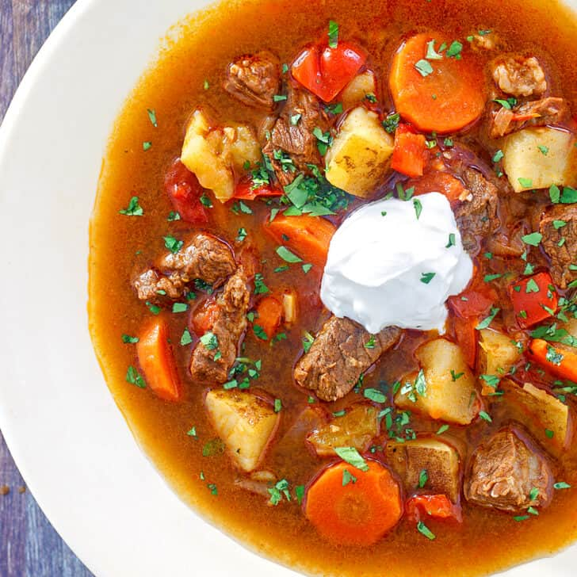

Authentic Hungarian Gulyas (Goulash)

Hungarian goulash is not american goulash
Goulash is Hungary's national dish, yet very few actually know what it is.
The dish many know to be goulash is actually known in hungary as pörkölt.
This recipe teaches the gulyásleves many hungarians (including me)
know and love. While the american goulash is a stew involving macaroni,
beef and tomato paste, the hungarian goulash is a soup involving beef,
a variety of vegetables, paprika and a small amount of white wine.
It was traditionally cooked by herdsmen in a large pot, and you can still
find this style of cooking today. Due to this simple herdsman ancestry,
the goulash is an outstanding example of what incredible
flavor can be produced by simple ingredients when cooked properly.
Ingredients
- 3 tablespoons pork lard , or butter or bacon grease
(pork lard is traditionally used and imparts a great flavor)
- 1 1/2 pounds yellow onions chopped
- 1/4 cup quality genuine imported Hungarian sweet paprika
- 1 1/2 pounds stewing beef , cut into 1/2 inch pieces
- 5 cloves garlic ,minced
- 2 red bell peppers ,seeded/membranes removed, cut into 1/2 inch chunks
- 1 yellow bell pepper ,seeded/membranes removed, cut into 1/2 inch chunks
- 2 tomatoes ,diced
- 2 carrots ,diced
- 2 medium potatoes ,cut into 1/2 inch chunks
- 5 cups beef broth
(traditionally just water is used but beef broth adds so much more flavor)
- 1 bay leaf
- 1 teaspoon salt
- 1/2 teaspoon freshly ground black pepper
- 1/2 teaspoon crushed caraway seeds (optional, not traditional in all regions)
Directions
-
Melt the pork lard or butter/oil in a Dutch oven or other heavy soup pot over
medium high heat and cook the onions until beginning to brown, about 7-10 minutes.
- Add the beef and cook until the beef is just starting to brown, 7-10 minutes.
- Add the bell peppers, tomatoes, and garlic and cook for another 6-8 minutes.
- Remove the pot from the heat and stir in the paprika, salt, pepper and caraway
(if using) (note: paprika becomes bitter if at all scorched).
- Add the beef broth, bay leaf, return to the stove and bring to a boil.
- Reduce the heat to medium, cover and simmer for 40 minutes.
- Add the carrots and potatoes.
- Return to a boil, reduce the heat to medium, cover,
and simmer for another 30-40 minutes or until the beef is nice and tender.
- Add salt to taste. Remove the bay leaf.
Credit for recipe to Kimberly Killebrew.